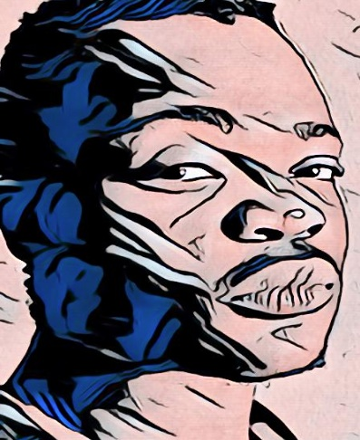

∞ ⋈ ∞ ∞ ⋈ ∞ ∞ ⋈ ∞
| TEAM MEMBERS | |
|---|---|
|

Mr. Albert R. Mantu Marketing IPPAEX tokens |

Mr. M.D. Pienaar BRek (Hon), MPhil (Philosophy) Owner/Founder. General Management LinkedIn Profile |
Looking for equity partners. 48% of the brand value of Africahead will belong to Africahead Ipparts (AFA)
ERC20 token holders. Equity owners may not hold AFA.
During
2018 more than 500 South African voters from varied backgrounds and "races" signed the Deed of
Foundation of Federal Party SA, a new political
party in South Africa.
Africahead is an "'all'-in-'one'" business, because it combines politics and business.